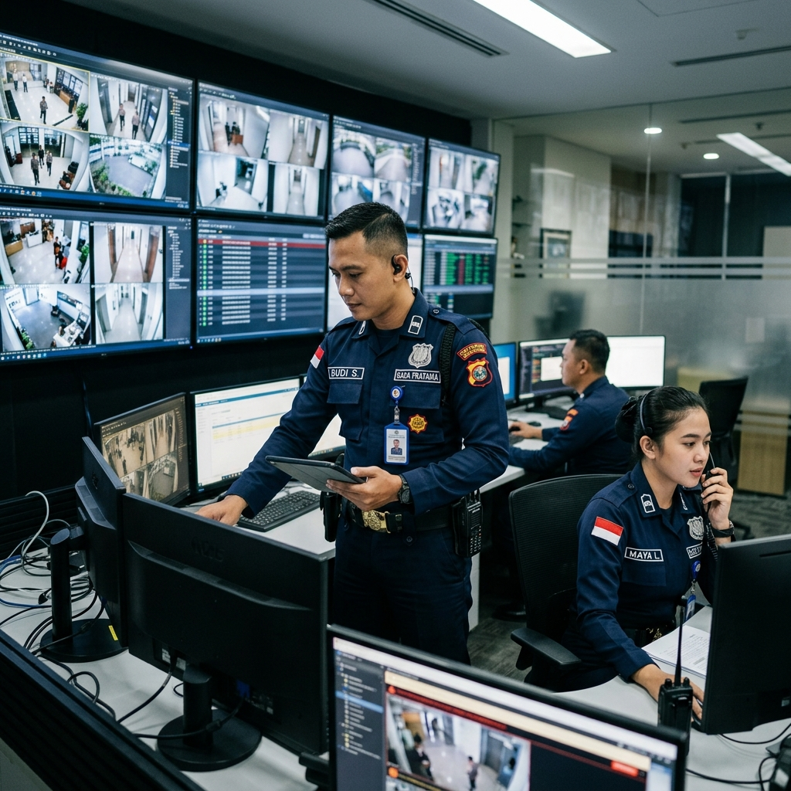
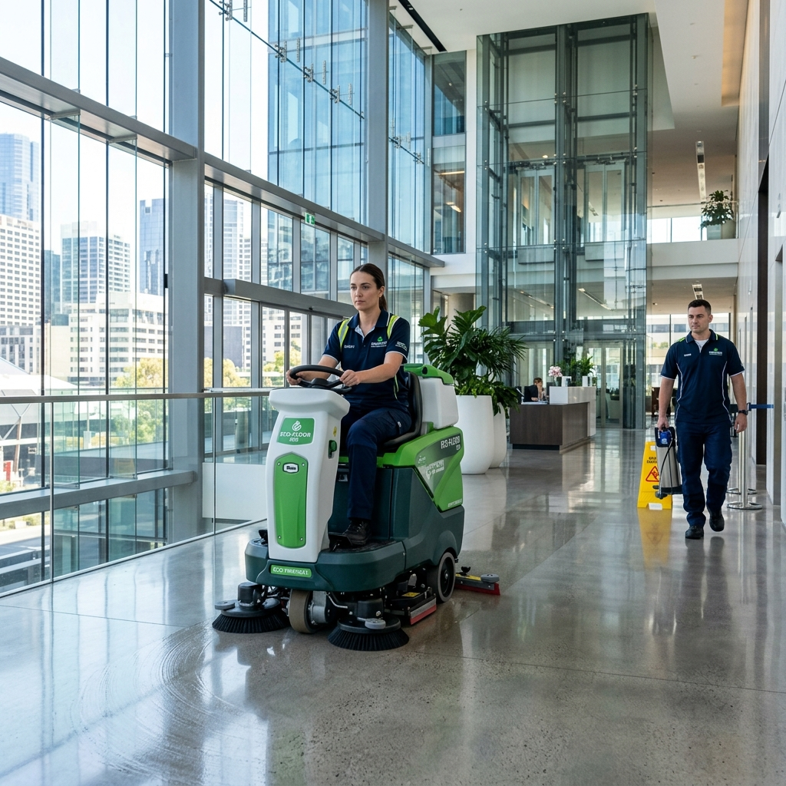
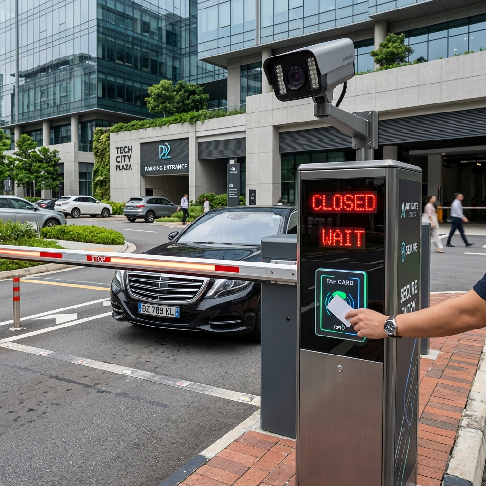

TIGA JANGKAR UTAMA
PT. Tiga Jangkar Utama merupakan perusahaan property service terdepan yang menyediakan Jasa Pengelolaan Parkir, Jasa Kebersihan, Jasa Pengamanan, serta Jasa IT & Web Development berstandar Sistem Manajemen Mutu (ISO).

4 Pilar Layanan PT Tiga Jangkar Utama
Prinsip utama kami dalam merekrut sumber daya manusia yang jujur, berani, dan berkualitas dengan penerapan Sistem Manajemen Mutu (ISO).
SDM Berkualitas
Merekrut sumber daya manusia yang jujur, berani, berintegritas tinggi, serta dibekali pelatihan intensif sesuai bidangnya.
Standar Mutu ISO
Penerapan Sistem Manajemen Mutu (ISO) secara konsisten untuk menjamin keandalan mutu pelayanan di setiap proyek rekanan.
Layanan Terintegrasi
Mengintegrasikan pengelolaan parkir, kebersihan, pengamanan, hingga pengembangan aplikasi IT dalam satu sistem profesional.
Komitmen Terbaik
Senantiasa memegang prinsip memberikan pelayanan terbaik sebagai bentuk komitmen nyata untuk kepuasan seluruh mitra perusahaan.
Solusi Property Service & Teknologi
Klik tombol detail layanan untuk melihat informasi lengkap, keunggulan, serta dokumentasi foto kegiatan operasional di lapangan.

Jasa Pengamanan (Security Service)
Pengamanan area profesional, pengawasan akses, monitoring lingkungan, dan mitigasi gangguan keamanan dengan personil terdidik, jujur, berani, dan berlisensi.

Jasa Kebersihan (Cleaning Service)
Perawatan kebersihan area gedung, tempat kerja higienis, sanitasi berkala, dan pemeliharaan fasilitas umum dengan tenaga profesional terstruktur.

Jasa Pengelolaan Parkir (Automatic Parking Gate)
Sistem pengelolaan akses parkir otomatis, portal barrier gate, integrasi manless/RFID, dan transparansi laporan keuangan pendapatan parkir.

Jasa IT & Web Development
Pengembangan website company profile modern, custom web application (ERP/CRM/HRIS), UI/UX design intuitif, serta pemeliharaan sistem digital.
Dokumentasi Kegiatan & Lapangan
Dokumentasi nyata kegiatan personil dan layanan PT Tiga Jangkar Utama di berbagai lokasi mitra perusahaan rekanan.

PT Tiga Jangkar Utama
PT. Tiga Jangkar Utama merupakan salah satu perusahaan property service yang didalamnya terdapat jasa pengelolaan parkir, jasa kebersihan, jasa pengamanan, jasa IT dan web development.
Dengan menerapkan Sistem Manajemen Mutu (ISO), kami berusaha menjadi mitra terdepan dalam membantu perusahaan rekanan. Memberikan pelayanan yang terbaik dengan merekrut sumber daya manusia yang jujur, berani dan berkualitas serta senantiasa memegang prinsip memberikan yang terbaik adalah komitmen kami dalam pelayanan.
Sejak awal berdiri sampai saat ini, perusahaan kami sudah bekerjasama dengan beberapa perusahaan yang berbeda-beda jenis usahanya. Kami yakin dengan kinerja dan pelayanan yang baik, kami akan menjadi yang terdepan.
- Menjadi perusahaan penyedia jasa yang terpercaya & profesional.
- Membantu pemerintah dalam mengurangi angka pengangguran sehingga menjadi manusia yang produktif.
- Menyediakan sumber daya manusia yang berkualitas.
- Membantu mitra perusahaan dengan menjadi perusahaan jasa yang dibutuhkan.
Mitra Perusahaan & Jenis Usaha Rekanan
Telah berpengalaman melayani berbagai bidang usaha di Indonesia
Informasi Alamat & Kontak Resmi
Silakan hubungi kami untuk berkonsultasi mengenai kebutuhan pengelolaan parkir, kebersihan, pengamanan, maupun IT development.
Alamat Kantor
Jl. Tanah baru raya, No. 49, Kecamatan Beji, Kotamadya Depok.
Telepon / WhatsApp
Phone: 0821-1631-3493
Email Resmi
3jangkarutama@gmail.com
jangkarparking@gmail.com
Jam Operasional
Senin - Sabtu: 08.00 - 17.00 WIB
(24/7 Pengawasan Operasional)